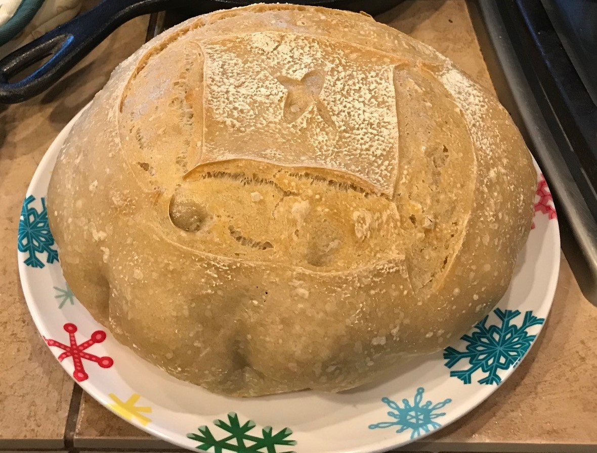

Flow is defined as a state where you are so engaged in what you are doing that you forget about everything happening around you. Baking bread is my flow:
These are my top 5 time wasting activities
| 6:00 am | 9:00 am | 12:00 pm | 3:00pm |
|---|---|---|---|
| sleepy | awake | starving | fatigued |